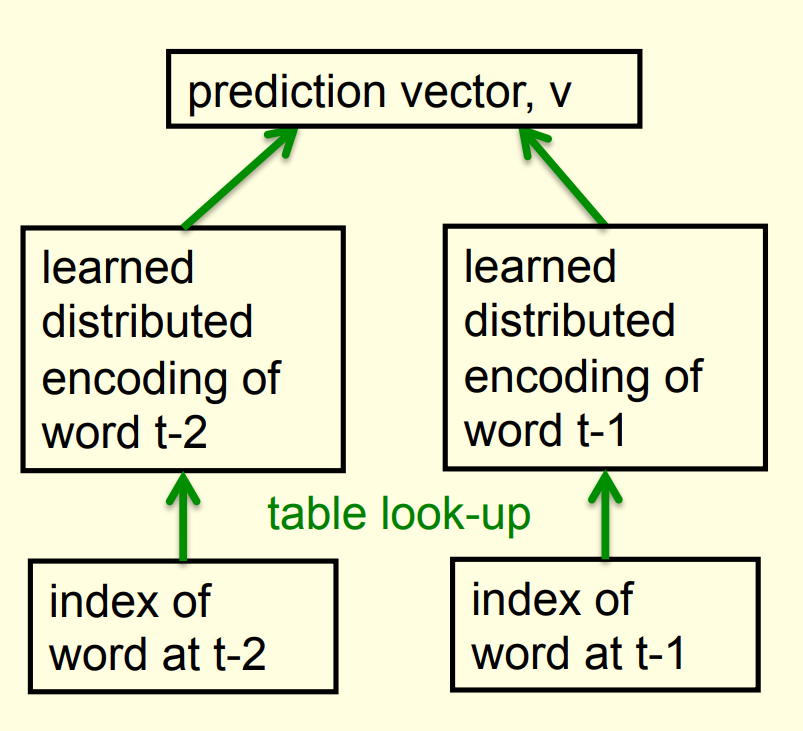
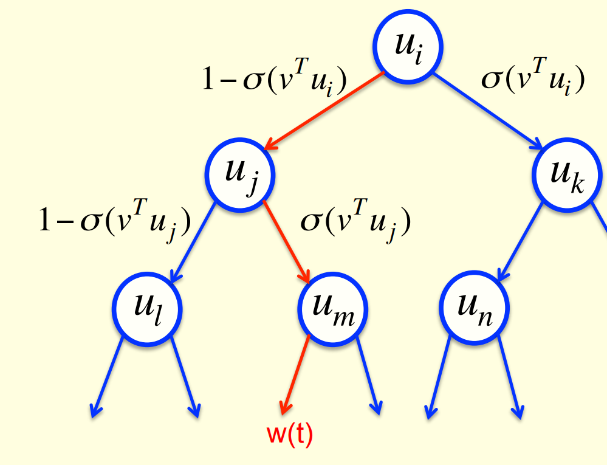
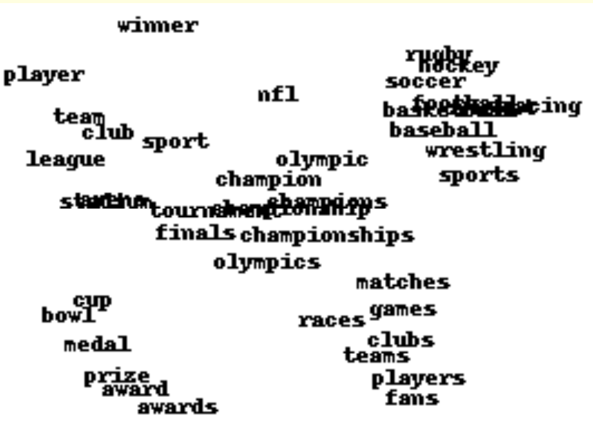
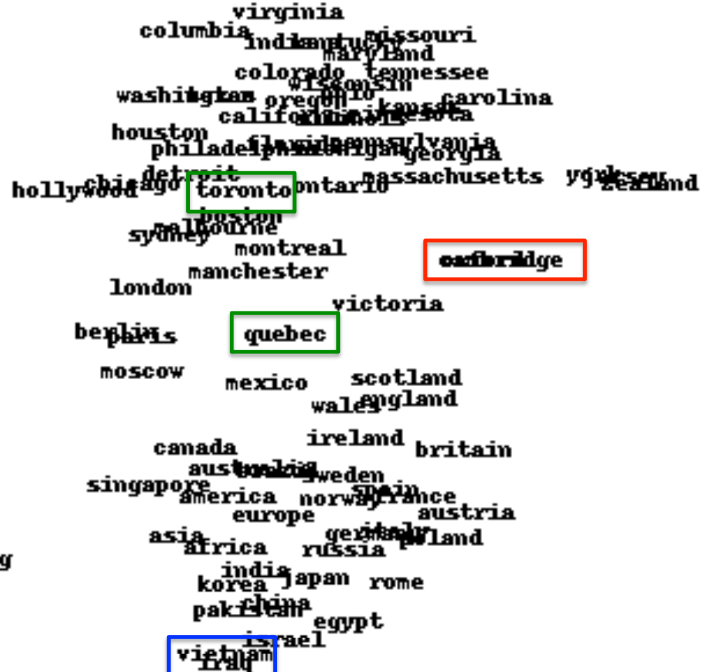

We have the basic method for creating hidden layers (backprop), we’re going to see what can be achieved with them. We start to ask how the network learns to use its hidden units, with a toy application to family trees and a real application to language modeling.
Lecture 4a: Learning to predict the next word
A simple example of relational information

Another way to express the same information
- Make a set of propositions using the 12 relationships:
- son, daughter, nephew, niece, father, mother, uncle, aunt
- brother, sister, husband, wife
- (Colin has-father James)
- (Colin has-mother Victoria)
- (James has-wife Victoria) this follows from the two above
- (Charlotte has-brother Colin)
- (Victoria has-brother Arthur)
- (Charlotte has-uncle Arthur) this follows from the above
A relational learning task
- Given a large set of triples that come from some family trees, figure out the regularities.
- The obvious way to express the regularities is as symbolic rules (x has-mother y) & (y has-husband z) => (x has-father z)
- Finding the symbolic rules involves a difficult search through a very large discrete space of possibilities.
- Can a neural network capture the same knowledge by searching through a continuous space of weights?
The structure of the neural net

{kind=link}
{kind=link}
What the network learns ?
- The six hidden units in the bottleneck connected to the input representation of person 1 learn to represent features of people that are useful for predicting the answer.
- Nationality, generation, branch of the family tree.
- These features are only useful if the other bottlenecks use similar representations and the central layer learns how features predict other features. For example:
- Input person is of generation 3 and
- relationship requires answer to be one generation up
- implies
- Output person is of generation 2
Another way to see that it works
- Train the network on all but 4 of the triples that can be made using the 12 relationships
- It needs to sweep through the training set many times adjusting the weights slightly each time.
- Then test it on the 4 held-out cases.
- It gets about 3/4 correct.
- This is good for a 24-way choice.
- On much bigger datasets we can train on a much smaller fraction of the data.
A large-scale example
- Suppose we have a database of millions of relational facts of the form (A R B).
- We could train a net to discover feature vector representations of the terms that allow the third term to be predicted from the first two.
- Then we could use the trained net to find very unlikely triples. These are good candidates for errors in the database.
- Instead of predicting the third term, we could use all three terms as input and predict the probability that the fact is correct.
- To train such a net we need a good source of false facts.
A relational learning task
- Given a large set of triples that come from some family trees, figure out the regularities.
- The obvious way to express the regularities is as symbolic rules:
HasMother(x,y)\ and\ HasHusband(y,z) \implies HasFather(x, z)
- The obvious way to express the regularities is as symbolic rules:
- Finding the symbolic rules involves a difficult search through a very large discrete space of possibilities.
- Can a neural network capture the same knowledge by searching through a continuous space of weights?
The structure of the neural net
- The six hidden units in the bottleneck connected to the input representation of person 1 learn to represent features of people that are useful for predicting the answer.
- Nationality, generation, branch of the family tree. These features are only useful if the other bottlenecks use similar representations and the central layer learns how features predict other features. For example: Input person is of generation 3 and relationship requires answer to be one generation up implies Output person is of generation 2 This video introduces distributed representations. It’s not actually about predicting words, but it’s building up to that. It does a great job of looking inside the brain of a neural network. That’s important, but not always easy to do.
Lecture 4b: A brief diversion into cognitive science
This video is part of the course, i.e. it’s not optional, despite what Geoff says in the beginning of the video. This video gives a high-level interpretation of what’s going on in the family tree network. This video contrasts two types of inference:
- Conscious inference, based on relational knowledge.
- Unconscious inference, based on distributed representations.
Lecture 4c: Another diversion: The Softmax output function
A Softmax cost function is a general-purpose ML component/technique for combining binary discriminators into a probability distribution to construct a classifier We’ve seen binary threshold output neurons and logistic output neurons. This video presents a third type.
This one only makes sense if we have multiple output neurons.
Problems with squared error
- The squared error measure has some drawbacks:
- If the desired output is 1 and the actual output is 0.00000001 there is almost no gradient for a logistic unit to fix up the error.
- If we are trying to assign probabilities to mutually exclusive class labels, we know that the outputs should sum to 1, but we are depriving the network of this knowledge.
- Is there a different cost function that works better?
- Yes: Force the outputs to represent a probability distribution across discrete alternatives
Softmax
The output units in a softmax group use a non-local non-linearity:
y_i = \frac{e^{z_i}}{\sum_{j\in group} e^{z_i}}
\frac{\partial y_i}{\partial z_i} = y_i(1-y_i)

Cross-entropy: the right cost function to use with SoftMax
C=-\sum_j t_j \log y_i \frac {\partial C}{\partial z_i} = - \sum_j t_j \frac {\partial C}{\partial y_i} \frac {\partial y_u}{\partial z_i} = y_i -t_i
- The right cost function is the negative log probability of the right answer.
- C has a very big gradient when the target value is 1 and the output is almost zero.
- A value of 0.000001 is much better than 0.000000001
- The steepness of dC/dy exactly balances the flatness of dy/dz
the cross entropy cost function - is the correct cost function to use with SoftMax
Architectural Note:
SoftMax unit +Cross-Entropy loss function => for classification
Lecture 4d: Neuro-probabilistic language models
This is the first of several applications of neural networks that we’ll studying in some detail, in this course.
Synonyms: word embedding; word feature vector; word encoding.
All of these describe the learned collection of numbers that is used to represent a word. “embedding” emphasizes that it’s a location in a high-dimensional space: it’s where the words are embedded in that space. When we check to see which words are close to each other, we’re thinking about that embedding.
“feature vector” emphasizes that it’s a vector instead of a scalar, and that it’s componential, i.e. composed of multiple feature values.
“encoding” is very generic and doesn’t emphasize anything specific. looks at the trigram model
A basic problem in speech recognition
- We cannot identify phonemes perfectly in noisy speech
- The acoustic input is often ambiguous: there are several different words that fit the acoustic signal equally well.
- People use their understanding of the meaning of the utterance to hear the right words.
- We do this unconsciously when we wreck a nice beach.
- We are very good at it.
- This means speech recognizers have to know which words are likely to come next and which are not.
- Fortunately, words can be predicted quite well without full understanding.
The standard “trigram” method
- Take a huge amount of text and count the frequencies of all triples of words.
- Use these frequencies to make bets on the relative probabilities of words given the previous two words:
\frac{p(w_3=c|w_2=b,w_1=a)}{p(w_3=d|w_2=b,w_1=a)}=\frac{count(abc)}{count(abd)}
- Until very recently this was the state-of-the-art.
- We cannot use a much bigger context because there are too many possibilities to store and the counts would mostly be zero.
- We have to “back-off” to digrams when the count for a trigram is too small.
- The probability is not zero just because the count is zero!
Information that the trigram model fails to use
- Suppose we have seen the sentence “the cat got squashed in the garden on friday”
- This should help us predict words in the sentence “the dog got flattened in the yard on monday”
- A trigram model does not understand the similarities between
- cat/dog squashed/flattened garden/yard friday/monday
- To overcome this limitation, we need to use the semantic and syntactic features of previous words to predict the features of the next word.
- Using a feature representation also allows a context that contains many more previous words (e.g. 10).
Lecture 4e: Ways to deal with the large number of possible outputs
When softmax is very big it becomes hard to train and store.
- A serial architecture, based on trying candidate next words, using feature vectors (like in the family example). This means fewer parameters, but still a lot of work.
- Using a binary tree.
- Collobert & Weston’s search for good feature vectors for words, without trying to predict the next word in a sentence.
Bengio’s neural net for predicting the next word

A serial architecture
{kind=link}
Learning in the serial architecture
- After computing the logit score for each candidate word, use all of the logits in a softmax to get word probabilities.
- The difference between the word probabilities and their target probabilities gives cross-entropy error derivatives.
- The derivatives try to raise the score of the correct candidate and lower the scores of its high-scoring rivals.
- We can save a lot of time if we only use a small set of candidates suggested by some other kind of predictor.
- For example, we could use the neural net to revise the probabilities of the words that the trigram model thinks are likely.
Learning to predict the next word by predicting a path through a tree
In Mnih, Yuecheng, and Hinton (2009) the authors show how to improve a state-of-the-art neural network language model that converts the previous “context” words into feature vectors and combines these feature vectors linearly to predict the feature vector of the next word.
Significant improvements in predictive accuracy are achieved by using a non-linear subnetwork to modulate the effects of the context words or to produce a non-linear correction term when predicting the feature vector.
{kind=link}
- Arrange all the words in a binary tree with words as the leaves.
- Use the previous context to generate a prediction vector, v.
- Compare v with a learned vector, u, at each node of the tree.
- Apply the logistic function to the scalar product of u and v to predict the probabilities of taking the two branches of the tree.
A picture of the learning
 
A convenient decomposition
- Maximizing the log probability of picking the target word is equivalent to maximizing the sum of the log probabilities of taking all the branches on the path that leads to the target word.
- So during learning, we only need to consider the nodes on the correct path. This is an exponential win: log(N) instead of N.
- For each of these nodes, we know the correct branch and we know the current probability of taking it so we can get derivatives for learning both the prediction vector v and that node vector u.
- Unfortunately, it is still slow at test time.
A simpler way to learn feature vectors for words
This method comes from the paper (Collobert and Weston 2008)
{kind=link}
Displaying the learned feature vectors in a 2-D map
- We can get an idea of the quality of the learned feature vectors by displaying them in a 2-D map.
- Display very similar vectors very close to each other.
- Use a multi-scale method called “t-sne” that also displays similar clusters near each other.
- The learned feature vectors capture lots of subtle semantic distinctions, just by looking at strings of words.
- No extra supervision required.
- The information is all in the contexts that the word is used in.
- Consider “She scrommed him with the frying pan.”
Part of a 2-D map of the 2500 most common words
 
{kind=link}
References
Reuse
Citation
@online{bochman2017,
author = {Bochman, Oren},
title = {Deep {Neural} {Networks} - {Notes} for {Lesson} 4},
date = {2017-08-10},
url = {https://orenbochman.github.io/blog//notes/dnn/dnn-04/l_04.html},
langid = {en}
}